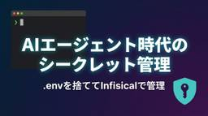
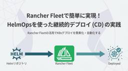

SIOS Tech Lab
https://tech-lab.sios.jp
サイオステクノロジーのエンジニアが クラウド、OSS、認証に関する様々な情報を提供します。
フィード

AI エージェントに.envを読まれたくなかったからInfisicalを導入てみた
SIOS Tech Lab
PSSLの佐々木です Claude Code・Copilot・Codex といった AI コーディングエージェントは、コマンドを実行できる権限を持ったまま手元のリポジトリの中で動きます。便利ですが、 secret (AP ...AI エージェントに.envを読まれたくなかったからInfisicalを導入てみた first appeared on SIOS Tech Lab.
6日前

Rancher Fleetで簡単に実現！HelmOpsを使った継続的デプロイ(CD)の実践
SIOS Tech Lab
はじめに こんにちは、サイオステクノロジーの小野です。以前、HelmOpsについて解説しました。 HelmOps環境を構築するCDツールは様々な種類があります。（ex. Rancher Fleet, ArgoCD, Fl ...Rancher Fleetで簡単に実現！HelmOpsを使った継続的デプロイ(CD)の実践 first appeared on SIOS Tech Lab.
6日前

【2026年5月】OSSサポートエンジニアが気になった！OSS最新ニュース
SIOS Tech Lab
こんにちは！ 今月も「OSSのサポートエンジニアが気になった！OSSの最新ニュース」をお届けします。 2017 年から潜伏していた Linux カーネルの深刻な脆弱性「Copy Fail」が、極めて重大なリスクとして速や ...【2026年5月】OSSサポートエンジニアが気になった！OSS最新ニュース first appeared on SIOS Tech Lab.
7日前

知っておくとちょっと便利！ターミナル操作の時短テクニック1 44
44
SIOS Tech Lab
今号では、Linux におけるターミナル操作で、可能な限り入力の手間を削るための tips をご紹介します！ なお、ターミナル操作に関連する内容として過去の記事で一部ご紹介しているものもありますので、そちらもぜひご覧くだ ...知っておくとちょっと便利！ターミナル操作の時短テクニック1 first appeared on SIOS Tech Lab.
7日前

Foundry IQはどう動いている？構成要素とAgentic Retrievalの仕組みを解説
SIOS Tech Lab
こんにちは、サイオステクノロジーの佐藤です。 今回は、前回のブログでも触れたFoundry IQについて、もう一歩踏み込み、「実際に内部でどのような処理が行われているのか？」という構造面を解説します。 Foundry I ...Foundry IQはどう動いている？構成要素とAgentic Retrievalの仕組みを解説 first appeared on SIOS Tech Lab.
21日前
AI写真加工 入門：Nano Banana / GPT Imageを即戦力にする短文プロンプト集
SIOS Tech Lab
2025年8月にリリースされた、Googleの画像生成AI「Nano Banana」は、空間を的確に把握し、被写体の個性を保った一貫性ある加工が行えるなど、革新的なものでした。そして、2026年2月には、「Nano Ba ...AI写真加工 入門：Nano Banana / GPT Imageを即戦力にする短文プロンプト集 first appeared on SIOS Tech Lab.
1ヶ月前
constraints.txtを使用してPythonの推移依存パッケージを管理する
SIOS Tech Lab
サイオステクノロジーのひろです。 今回はpython環境の依存関係を管理するrequirements.txtとconstraints.txtについて学んだのでブログにまとめてみます。 本記事では、実際に手元の環境にパッケ ...constraints.txtを使用してPythonの推移依存パッケージを管理する first appeared on SIOS Tech Lab.
1ヶ月前
セキュリティスキャン指摘対応 | HSTS導入の影響と回避策
SIOS Tech Lab
こんな方へ特におすすめ 概要 こんにちは。サイオステクノロジーのはらちゃんです！ 今回はSL代表としてセキュリティスキャン対策のコミュニケーションチームに入りました。 そこで得た「現場でのリアルな立ち回り」「セキュリティ ...セキュリティスキャン指摘対応 | HSTS導入の影響と回避策 first appeared on SIOS Tech Lab.
1ヶ月前
第4回 JAZUG Shizuoka 参加レポート｜気になる雰囲気と登壇紹介
SIOS Tech Lab
概要 こんにちは。サイオステクノロジーのはらちゃんです！ 今回は、私が第4回 JAZUG Shizuoka に参加してきた体験をレポートします。ローカル会場の雰囲気や私が登壇した内容の紹介などIT イベント参加の後押しに ...第4回 JAZUG Shizuoka 参加レポート｜気になる雰囲気と登壇紹介 first appeared on SIOS Tech Lab.
1ヶ月前
知っておくとちょっと便利！Linux の拡張子について2 (ちょっと深掘り)
SIOS Tech Lab
今号では、Linux における「拡張子」について、ちょっと深掘りした内容をご説明します！ 前号でご紹介した「知っておくとちょっと便利！Linux の拡張子について」もぜひご参照くださいね。 Linux がファイルの種類を ...知っておくとちょっと便利！Linux の拡張子について2 (ちょっと深掘り) first appeared on SIOS Tech Lab.
1ヶ月前